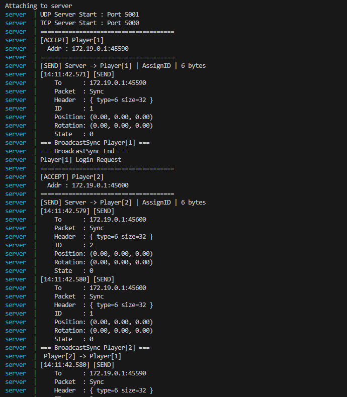
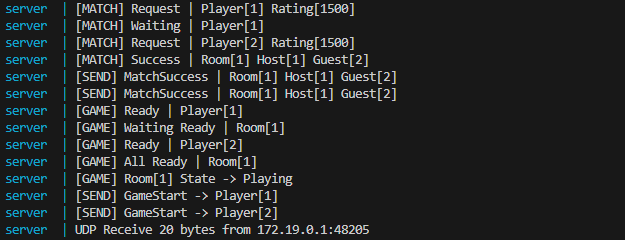
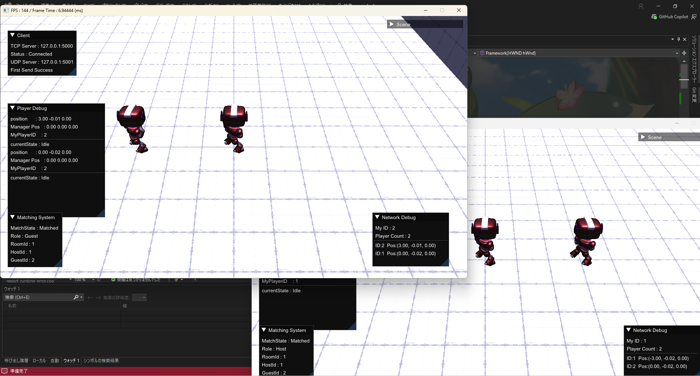
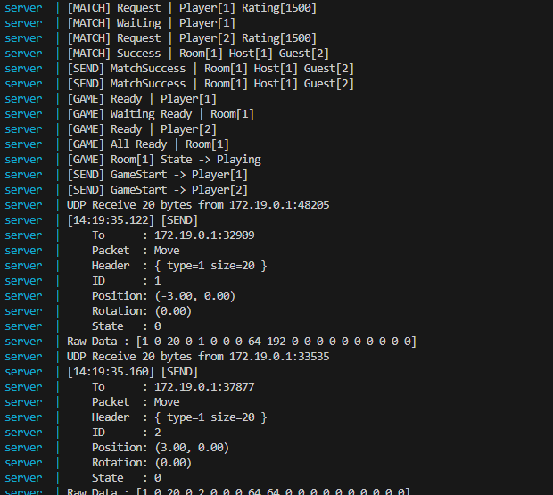
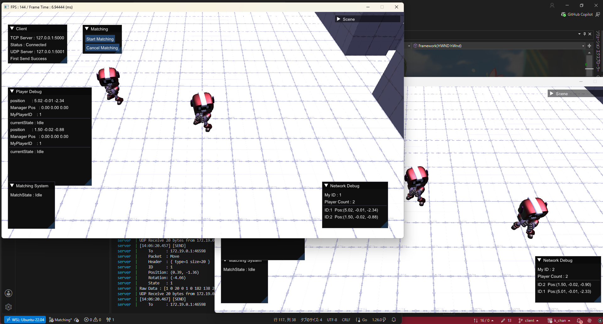
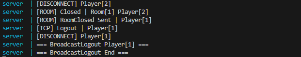
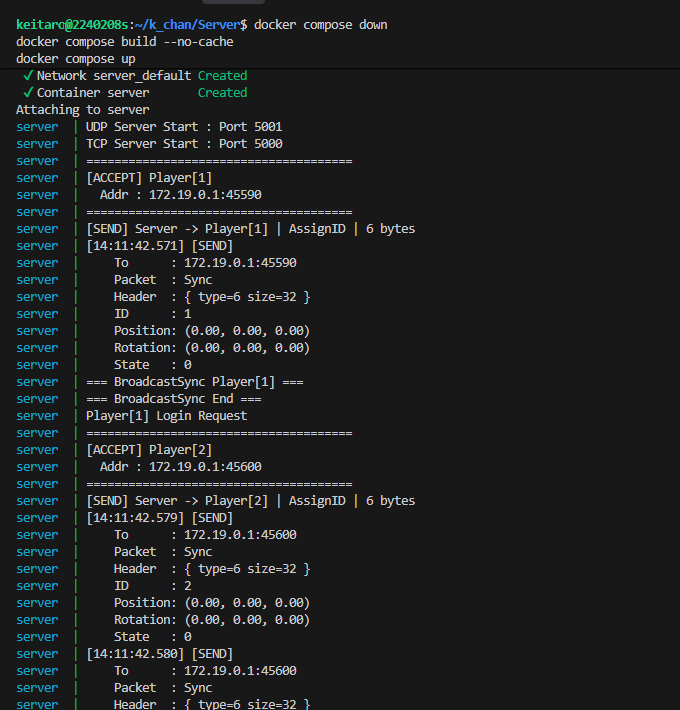
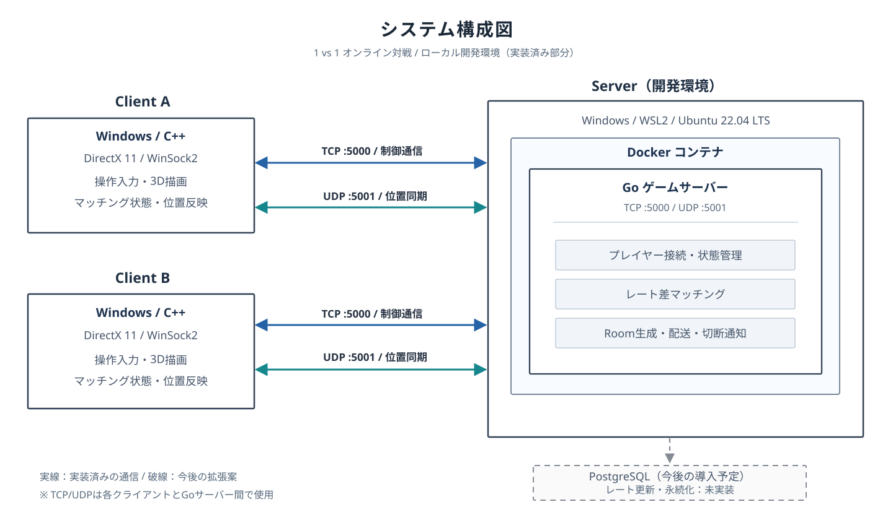

01 実装済み
C++・DirectX 11クライアント
プレイヤーの操作、3D描画、シーン遷移、サーバーとの通信を行うクライアントをC++で開発しました。Goサーバーと接続し、マッチング状況や対戦相手の位置を画面に反映します。
- 画面と操作
- DirectX 11による描画に加え、ImGuiでマッチング状態やRoom情報を確認できます。
- 受信処理
- 通信スレッドで受け取ったイベントをキューなどで管理し、ゲーム更新処理で反映する構成にしています。
PROJECT 01 / PERSONAL DEVELOPMENT
個人制作・開発中
C++・DirectX 11のゲームクライアントと、Goによるゲームサーバーを個人で開発しています。
レート差によるマッチングから対戦用Roomの管理、TCP・UDPを用いた位置同期まで、オンライン対戦の基盤となる処理を実装しました。
01 / OVERVIEW
 概念図を大きく見る ↗
概念図を大きく見る ↗
本作品は、オンライン対戦に必要な仕組みを学び、実装するための技術デモです。サーバーが対戦相手を決定し、成立した2人をRoomに割り当て、対戦中の通信を管理します。
ゲームの描画よりも、マッチングの判定、Room管理、通信方式の使い分け、切断時の状態管理を主な制作テーマにしています。
概念図は作品のテーマを示すイメージです。実装内容の各項目には、実際のゲーム画面やサーバーログを掲載しています。
02 / IMPLEMENTATION
以下には、実際のクライアント画面とGoサーバーの実行ログを掲載しています。検証済みの処理と現在調査中の課題は分けて説明しています。

01 実装済み
プレイヤーの操作、3D描画、シーン遷移、サーバーとの通信を行うクライアントをC++で開発しました。Goサーバーと接続し、マッチング状況や対戦相手の位置を画面に反映します。

02 実装済み
プレイヤーから送られたレートを基に、サーバー側で対戦相手を探索します。レート差を条件として判定することで、対戦相手の決定をクライアント任せにしない設計にしています。

03 実装済み
マッチング成立時にRoomを生成し、Room ID、Host、Guestをサーバー側で管理します。両クライアントへ成立結果を通知し、対戦開始につなげます。
サーバー側の成立・開始処理


04 実装済み・一部検証中
確実に届ける必要がある制御情報はTCP、更新頻度の高い位置・動作情報はUDPで送受信します。また、プレイヤー切断時にはRoomを解散し、残った相手へ通知する処理を実装しました。
切断検知とRoom解散のログ

対戦結果に応じたレート更新、およびPostgreSQLへのレート保存・読み込みは今後の拡張予定です。
現在のレート差マッチングは動作していますが、対戦結果を永続化する仕組みはまだありません。
05 今後の実装予定
現在のレート差マッチングを拡張し、対戦結果に応じたレート更新とPostgreSQLへの保存を予定しています。次回接続時にもレートを利用できるようにし、継続的な対戦体験につなげることが目標です。

06 使用中
Windows上のVisual Studio 2022でC++クライアントを開発し、WSL2・Ubuntu 22.04とDockerを使用してGoサーバーの実行環境を構築しています。
03 / ARCHITECTURE

ゲームクライアントはWindows上のC++・DirectX 11で制作し、プレイヤーの操作・描画と受信した状態の反映を担います。GoサーバーはWSL2・Ubuntu 22.04上のDockerコンテナで動作し、接続管理・レート差マッチング・Room管理・状態の配送を担当します。
TCP（5000）：ログイン、マッチング要求、成立・Room制御、ゲーム開始通知。
UDP（5001）：位置・向き・動作などのリアルタイム同期。
PostgreSQLは導入予定で、現在稼働している構成には含まれていません。AWSやTLS、Nginxなども本作品の現行環境には含めていません。
04 / PURPOSE, DESIGN & REVIEW
01
ゲームの楽しさはグラフィックスや操作感だけではなく、対戦相手との出会い方や通信の安定性によっても左右されると考えています。そこで、サーバー側の仕組みがプレイヤー体験にどのようにつながるかを学ぶため、1vs1対戦のマッチングシステムを制作テーマにしました。
クライアントとサーバーの双方を個人で実装することで、画面上の挙動とサーバー内部の処理を結びつけて理解することを目指しています。
02
通信方式の使い分け：確実な到達を重視する制御情報にはTCP、継続的に更新する位置情報にはUDPを採用しました。
Roomを中心とした状態管理：マッチング成立後の2人をRoomに紐づけ、対戦相手に限定した位置情報の配送と、切断後の後処理を実装しています。
受信イベントの整理：クライアントでは通信処理とゲーム更新処理を分離し、受信イベントをキューなどを介して反映させています。
正常にマッチングできる場合だけでなく、切断によって対戦を継続できなくなった場合も想定した設計を重視しました。
03
2クライアントによる接続やレート差マッチング、Room生成、UDPでの位置同期などの処理を動作確認してきました。サーバーのログとクライアントの状態表示を照らし合わせることで、処理の順序や状態遷移が不具合の原因になりうることを学びました。
現在の課題：切断時のRoom解散と相手への通知は実装していますが、Room解散後の一部挙動に不具合が残っています。状態の初期化や画面遷移を含め、再現条件の整理と修正・再確認を進めています。
今後の拡張：対戦結果に応じたレート更新、PostgreSQLによるデータ永続化、デバッグ表示の充実に取り組む予定です。
05 / PROJECT NOTES
動作画面・ログ：2026年10月30日時点。切断後の一部状態遷移は継続して検証中です。